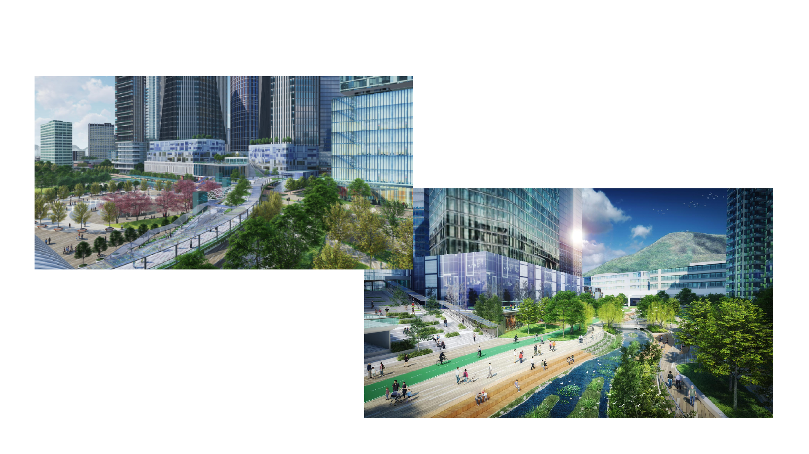
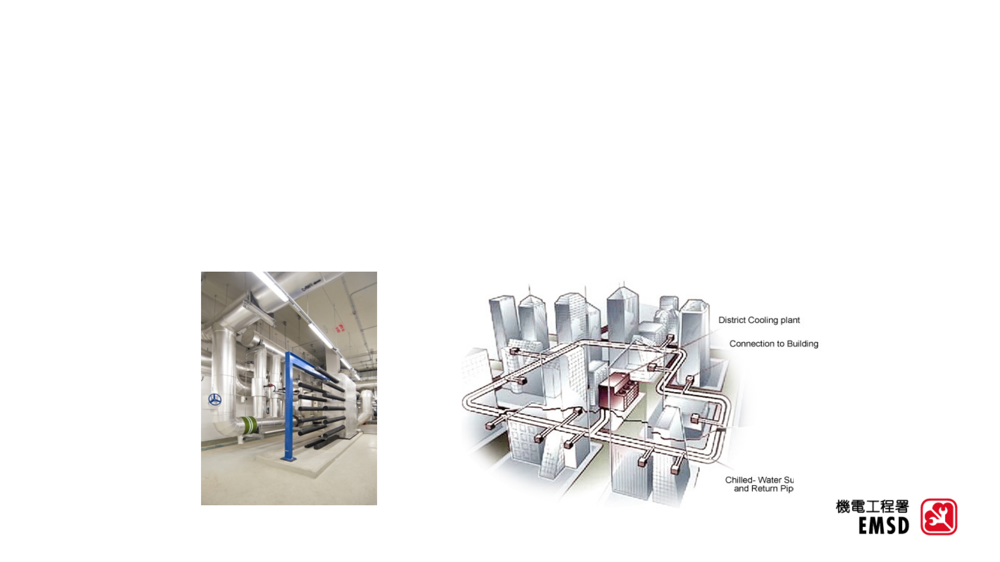
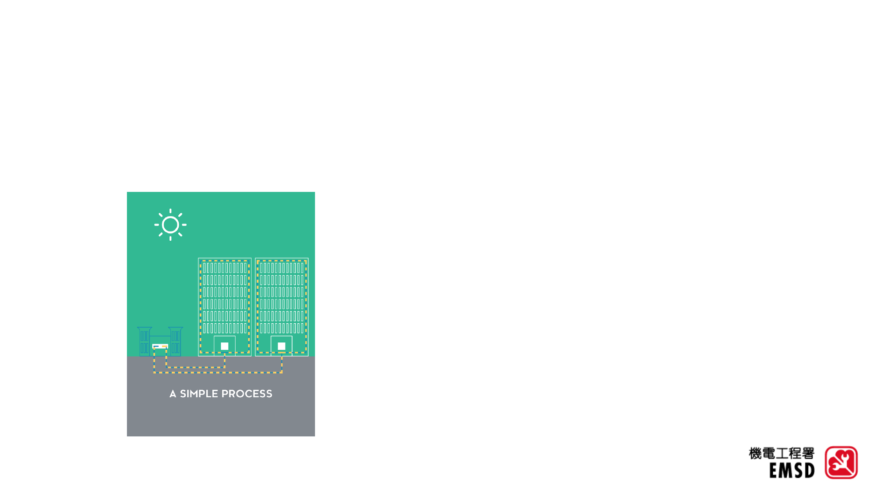
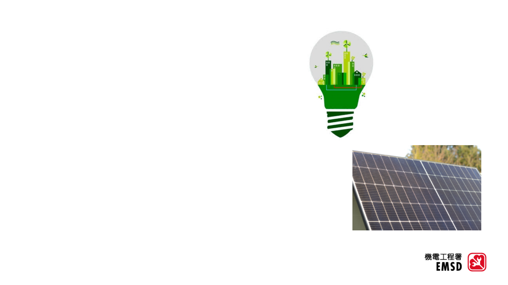
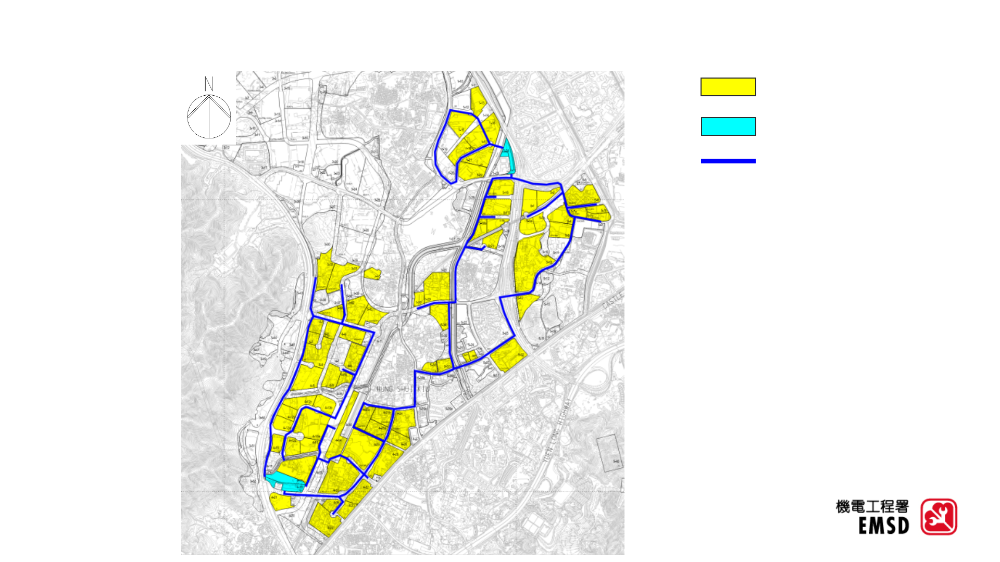
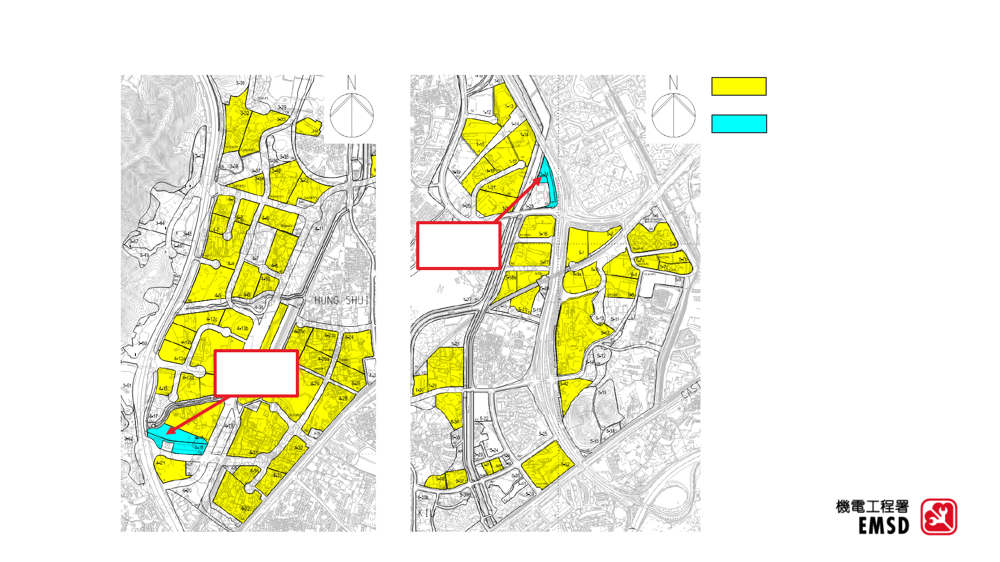
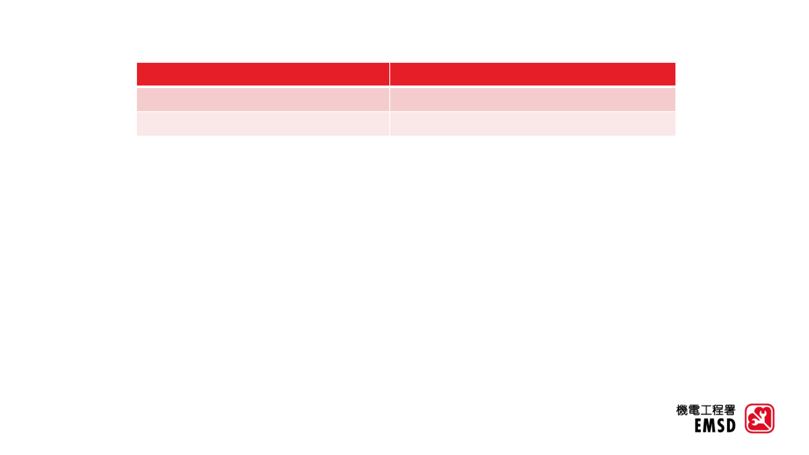

在洪水橋
/
厦村新發展區提供第一期區域供冷系統
公衆咨詢
2023
年
7
月
3
日

2
•
為
深
圳
灣
優
質
發
展
圈
當
中
一
個
位
於
香
港
特
區
的
策
略
性區域
•
未來新界北核心商務區所在之處
洪水橋
/
厦村新發展區
資料來源
: https://hskhtnda.hk/tc/

3
•
區
域供
冷
系
統將
中
央供
冷
站
製
造
的
冷
凍
水
通
過
配
水
管
道
網
絡
把
冷
凍
水
輸
送
到
用
戶
樓
宇
作
空調之用
•
適用於
不同營運種類
的
建築群
的發展
區域供冷系統
©HKSAR Government
©ARUP
©HKSAR Government

4
©HKSAR Government
•
節約能源及減少碳足跡
比
傳
統
氣
冷
式
空
調
系
統
及
獨
立
使
用
冷
卻
塔
的水冷式空調系統減省用電量
•
增加大廈設計的靈活性
可將建築物建造製冷機機房作其他用途
•
減少環境滋擾
可消除製冷機機房產生的噪音及振動。
•
減低熱島效應
建
築
物
天
台
無
須
裝
設
製
冷
裝
置
，
天
台
設
計
可
以
加
入
較
多
環
保
元
素
，
例
如
屋
面
綠
化
和
天台花園以減低熱島效應
•
空調系統更能切合實際需求變化
個
別
建
築
物
可
以
根
據
實
際
冷
量
需
求
改
變
其
製
冷
量
，
而
無
需
對
建
築
物
進
行
大
量
修
改
或
改造工程。
區域供冷系統的優點

5
綠色建築設施
•
綠建環評
區域供冷站將計劃申請綠建環評金級評級
•
綠色建築設施
區
域
供
冷
站
的
設
計
將
採
用
綠
色
建
築
設
施
及
可
再
生能源系統
，
例如光伏板。
©HKSAR Government

6
第一期區域供
冷
系統覆蓋範圍
區域供冷用
戶
擬議冷凍水管道
區域供冷站

7
第一期區域供
冷
系統覆蓋範圍
區域供冷用
戶
區域供冷站
區域供冷
東站
區域供冷
南站

8
整體工程時間表
項目
關鍵日期
工程開始
2024
年
第一季
工程完成
2038
年
第四季
註
:
供
冷
站預計於
2026
年展開工程，並於
2030
年開始投入運作